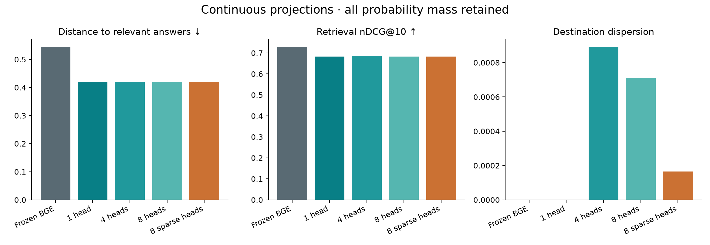

A small adapter produces continuous search destinations and assigns each a weight. Frozen BGE embeds both questions and answers. No fixed answer regions are used.
All probability mass counts. Training minimizes Σ weight × squared distance to a labeled answer. Multiple positives are averaged. There is no cumulative-weight cutoff, best-head reward, or extra diversity objective.

| Model | Distance ↓ | nDCG@10 ↑ | Effective heads | Nonzero heads |
|---|
Softmax assigns positive weight to every head. Sparsemax can learn exact zeros. Effective head count measures how spread the weights are; it does not establish that destinations differ. Destination dispersion measures that distinction.
For squared distance, the weighted score equals distance to the weighted-average destination plus a dispersion term. For a fixed query, the dispersion term is constant across candidate answers. Ranking is therefore exactly equivalent to ranking by one weighted-average vector. A different nonlinear distance reward could preserve distinct modes while still using every weight, but is not part of this experiment.
Checkpoints use validation expected distance, not retrieval nDCG. Better distance does not necessarily improve ranking. These are exploratory results on 243 answerable test questions; earlier experiments used the same benchmark.